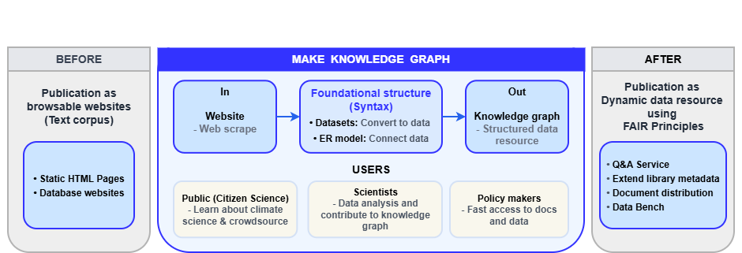
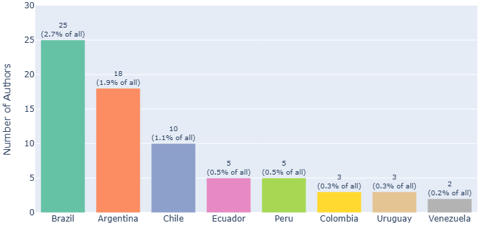
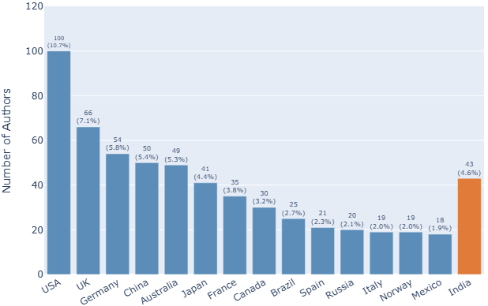

About
Climate Knowledge Graph (ClimateKG) is a community knowledge graph for literature on climate change science, intended for use by policymakers, citizen science projects, and scientists.
ClimateKG is a software research project for constructing a knowledge graph using the Intergovernmental Panel on Climate Change’s Sixth Assessment Report with the Wikibase software platform. The FAIR Principles are being applied to publishing and are employed to enrich the report with granular cataloguing, document distribution, and data analysis. The knowledge graph is a ‘community knowledge graph’ targeted at policymakers, citizen science projects, and scientists — inviting contributions and engagement to increase the report’s impact.
As a starting point, ClimateKG has imported the main sections of the 10,000 page corpus IPCC Sixth Assessment Report into the knowledge graph.
On the IPCC Sixth Assessment Report:
It is a survival guide for humanity. As it shows, the 1.5-degree limit is achievable.
- UN Secretary-General António Guterres (2023)
ClimateKG project links
- ClimateKG: Browse the text and data
- ClimateKG Data Bench: Data analysis and community contributions
- Docs: Documentation and development log
IPCC report: From browsable website to dynamic data resource

How the knowledge graph is made
The objective is to add a data surface to what is already in the documents, making the knowledge usable and searchable.
ClimateKG converts the Sixth Assessment Report from the web into basic foundational datasets to capture their main parts. It then connects these components using an entity-relationship model. The result is a knowledge graph: structured and connected data that can be searched directly.
Foundational datasets
AR6 has been broken down into five foundational datasets:
| Dataset | Data |
|---|---|
| 1. Corpus full text & structure | 7 reports; 88 chapters; 7,524,958 words, and; 2,153 image files |
| 2. Bibliographic information | 95 DOIs |
| 3. Glossary terms | 1,274 terms |
| 4. Acronyms | 1,910 |
| 5. Authors | 932 |
Entity-relationship model
ClimateKG connects these datasets using an entity-relationship model, forming the knowledge graph:
+- Corpus structure
+- 7 reports
+- REPORT
| <- Bibliographic information
| <- Glossary terms
| <- Acronyms
+- CHAPTER
<- Authors
<- Bibliographic information
<- Corpus full textUsing the knowledge graph
ClimateKG is a community knowledge graph that supports contributions from the scientific community and engagement from the wider public.
Searching the knowledge graph
The connections that the knowledge graph creates allow for querying the data. For example, given the question:
‘How many South American or Indian authors contributed to the report?’
ClimateKG can retrieve the answer along with the relevant chapter texts:
‘AR6 author distribution is 71 from South America and 43 from India.’
|
 |
 |
Planned releases
- Document distribution: The data provides a map of the internal structure of the corpus documents, enabling any section or piece of data to be retrieved and delivered to the user.
- Extended metadata: Questions can be answered quickly and reliably. Metadata is distributed to library systems and the Data Commons on Wikidata.
- Citizen science: ClimateKG collaborates with Youth Data Champions interns from the #SemanticClimate organisation on a global scale.
- Data science community: Contributors can enrich the corpus while maintaining the integrity of the original documents.
The ClimateKG project
Inspired by Tim Berners-Lee’s vision of the Semantic Web, ClimateKG is a software R&D project that uses FAIR Principles and Open Science infrastructures to liberate literature on climate change science.
Funding and support
ClimateKG has been funded by TIB Innovation fund, TIB — Leibniz Information Centre for Science and Technology and University Library of Hannover (ROR ID: ror.org/04aj4c181)
ClimateKG is an R&D project hosted at TIB — Leibniz Information Centre for Science and Technology and University Library — Germany, in partnership with #semanticClimate and the National Institute of Plant Genome Research (NIPGR) — India.
Background
ClimateKG comes out of the #semanticClimate (#sC) open research group founded by Dr. Gitanjali Yadav of NIPGR, Delhi, Dr Peter Murray-Rust of Cambridge University, and Simon Worthington (TIB). #semanticClimate supports an India-wide internship programme, hackathon series, and youth outreach programme. Web: https://semanticclimate.github.io/
TIB is one of the largest science libraries in the world and a global hub for knowledge graph R&D, especially the Open Research Knowledge Graph (ORKG). ClimateKG partners with Lab Knowledge Infrastructures led by Dr Markus Stocker, and draws on expertise from NFDI4Culture projects: Wikibase4Research, Computational Publishing Service, and Antelope (terminology service).
Team team
Project lead, Simon Worthington — #bookliberationist and publishing technologist simon.worthington@tib.eu ORCID iD: 0000-0002-8579-9717 | Mastodon: @mrchristian
Laura Oldenbourg — data modeling and publishing specialist, ORCID iD: 0009-0003-5070-0099.
With support from Markus Stocker, lead of Lab Knowledge Infrastructures.
Thank you for support and contributions to TIB colleagues and #semanticClimate members, volunteers, interns, and hackathon participants.
Copyright and licences
IPCC reports
The Climate Knowledge Graph imports content from the seven reports of the IPCC Sixth Assessment Report (AR6) cycle. Reports 1–6 are published by Cambridge University Press under Creative Commons Attribution-NonCommercial-NoDerivatives 4.0 (CC BY-NC-ND 4.0). Report 7 (the Synthesis Report) is published by the IPCC directly with all rights reserved; short extracts may be reproduced with full source attribution. See also the IPCC copyright notice.
1. Global Warming of 1.5°C (SR15) Special Report on the impacts of global warming of 1.5°C above pre-industrial levels. Copyright © 2018 Intergovernmental Panel on Climate Change (IPCC). Published by Cambridge University Press. License: CC BY-NC-ND 4.0 DOI: 10.1017/9781009157940 | Report
2. Climate Change and Land (SRCCL) Special Report on climate change, desertification, land degradation, sustainable land management, food security, and greenhouse gas fluxes in terrestrial ecosystems. Copyright © 2019 Intergovernmental Panel on Climate Change (IPCC). Published by Cambridge University Press. License: CC BY-NC-ND 4.0 DOI: 10.1017/9781009157988 | Report
3. The Ocean and Cryosphere in a Changing Climate (SROCC) Special Report on observed and projected changes to the ocean and cryosphere and their impacts. Copyright © 2019 Intergovernmental Panel on Climate Change (IPCC). Published by Cambridge University Press. License: CC BY-NC-ND 4.0 DOI: 10.1017/9781009157964 | Report
4. Climate Change 2021: The Physical Science Basis (AR6 WGI) Working Group I contribution to the Sixth Assessment Report. Copyright © 2021 Intergovernmental Panel on Climate Change (IPCC). Published by Cambridge University Press. License: CC BY-NC-ND 4.0 DOI: 10.1017/9781009157896 | Report
5. Climate Change 2022: Impacts, Adaptation and Vulnerability (AR6 WGII) Working Group II contribution to the Sixth Assessment Report. Copyright © 2022 Intergovernmental Panel on Climate Change (IPCC). Published by Cambridge University Press. License: CC BY-NC-ND 4.0 DOI: 10.1017/9781009325844 | Report
6. Climate Change 2022: Mitigation of Climate Change (AR6 WGIII) Working Group III contribution to the Sixth Assessment Report. Copyright © 2022 Intergovernmental Panel on Climate Change (IPCC). Published by Cambridge University Press. License: CC BY-NC-ND 4.0 DOI: 10.1017/9781009157926 | Report
7. Climate Change 2023: Synthesis Report (AR6 SYR) Synthesis Report integrating findings from the three Working Group reports and three Special Reports. Copyright © Intergovernmental Panel on Climate Change, 2023. ISBN: 978-92-9169-164-7 Published by the IPCC. License: All rights reserved. The right of publication in print, electronic and any other form and in any language is reserved by the IPCC. Short extracts from this publication may be reproduced without authorization provided that the complete source is clearly indicated. Requests to publish, reproduce or translate should be addressed to: IPCC c/o WMO, 7bis avenue de la Paix, P.O. Box 2300, CH-1211 Geneva 2, Switzerland. E-mail: IPCC-Sec@wmo.int DOI: 10.59327/IPCC/AR6-9789291691647 | Report
ClimateKG data
ClimateKG data is licensed under Creative Commons Zero v1.0 Universal (CC0 1.0) — dedicated to the public domain.
ClimateKG code — Open-source software
Code in this repository is licensed under the GNU General Public License v3.0 (GPL-3.0). See LICENSE.
ClimateKG design and fonts
Fonts are licensed under the SIL Open Font License (OFL).
Design assets are licensed under Creative Commons Attribution-ShareAlike 4.0 (CC BY-SA 4.0).
Other design resources under respective open licences.
Project information as schema ResearchProject
ℹ️ Generated content — from
project-info/project-info-en.xmlusingproject-info/project-info-schema/ResearchProject-readme.xslt· Schema: schema.org/ResearchProject. See project-info/README.md for the full pipeline documentation. Do not edit this section by hand — it is overwritten each time the pipeline runs.
Last updated:
2026-09-09T17:01:33Z
Climate Knowledge Graph (ClimateKG)
A community knowledge graph for literature on climate change science, intended for use by policymakers, citizen science projects, and scientists.


ClimateKG is a software research project for constructing a knowledge graph using the Intergovernmental Panel on Climate Change’s Sixth Assessment Report with the Wikibase software platform. The FAIR Principles are being applied to the publishing process to support the report in terms of more granular metadata, document distribution and data analysis. The knowledge graph is a ‘community knowledge graph’ targeted at policymakers, citizen science projects, and scientists — inviting contributions and engagement to increase the report’s impact.
Project Details
| Lead | TIB – Leibniz Information Centre for Science and Technology and University Library |
| Period | 2025-06-01–2026-06-30 |
| Grant | TIB Innovation Fund (GrantID) |
| URL | Repo - https://github.com/TIBHannover/climate-knowledge-graph |
| Also at | Docs - https://tibhannover.github.io/climate-knowledge-graph/ |
| Data Bench - https://github.com/TIBHannover/ClimateKG-Data-Bench | |
| Project profile - https://www.tib.eu/en/research-development/project-overview/project-summary/climatekg | |
| Languages | English, German |
Team
| Name | ORCID |
|---|---|
| Simon Worthington | 0000-0002-8579-9717 |
| Laura Oldenbourg | 0009-0003-5070-0099 |
| Markus Stocker | 0000-0001-5492-3212 |
| Gitanjali Yadav | 0000-0001-6591-9964 |
| Peter Murray-Rust | 0000-0003-3386-3972 |
| Renu Kumari | 0000-0002-9451-7814 |
Partner Organisations
Lead
Partners
Funding
TIB Innovation Fund – Grant ID: 2025-2026 – TIB – Leibniz Information Centre for Science and Technology and University Library – https://www.tib.eu/en
Subject Areas
Knowledge graph semantic web climate science literature Wikibase Mediawiki document distribution metadata FAIR Principles open-source software publishing citizen science IPCC publishing web scraping
Keywords
IPCC AR6 Sixth Assessment Report Wikibase MediaWiki ER model knowledge graph climate change semantic web FAIR principles document distribution citizen science metadata data science open science infrastructures literature
Licences & Copyright
- GNU GENERAL PUBLIC LICENSE Version 3, 29 June 2007 (Code) – Code is released under the GNU GENERAL PUBLIC LICENSE Version 3 or another OSI-compliant open source licence. Copyright: The authors. https://fsf.org/
- CC BY-SA 4.0 (Content) – Content is licensed under Creative Commons Attribution-ShareAlike 4.0 International. https://creativecommons.org/licenses/by-sa/4.0/
- CC0 1.0 Universal (Metadata) – Metadata is dedicated to the public domain under Creative Commons Zero 1.0 Universal. https://creativecommons.org/publicdomain/zero/1.0/
- Graphic design and fonts – Design assets are licensed under Creative Commons Attribution-ShareAlike 4.0 (CC BY-SA 4.0). Other design resources under respective open licences. Fonts are licensed under the SIL Open Font Licence or another open font licence. https://creativecommons.org/licenses/by-sa/4.0/ https://software.sil.org/oflt/
- IPCC reports – The Climate Knowledge Graph imports content from the seven reports of the IPCC Sixth Assessment Report (AR6) cycle. Reports 1–6 are published by Cambridge University Press under Creative Commons Attribution-NonCommercial-NoDerivatives 4.0 (CC BY-NC-ND 4.0). Report 7 (the Synthesis Report) is published by the IPCC directly with all rights reserved; short extracts may be reproduced with full source attribution. See also the IPCC copyright notice. https://creativecommons.org/licenses/by-nc-nd/4.0/ https://www.ipcc.ch/copyright/